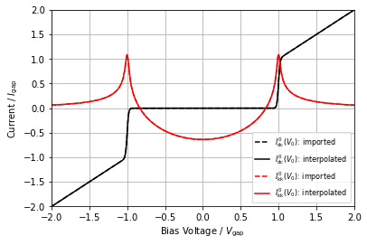
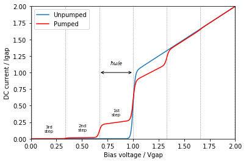
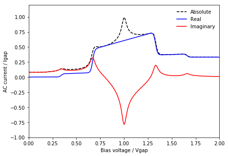
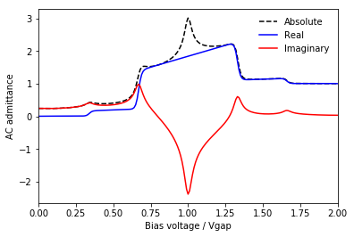
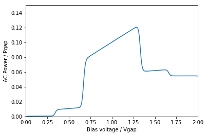

3. Creating a 1 tone simulation¶
- This simulation is very simple:
- The input consists of only one tone
- The embedding circuit is ignored (no harmonic balance)
- The DC I-V curve is generated through a polynomial model
- This simulation calculates:
- the pumped I-V curve
- the AC tunnelling currents
- the AC admittance
- the AC power delivered to the junction
In [1]:
import qmix
import numpy as np
import matplotlib
import matplotlib.pyplot as plt
%matplotlib notebook
3.1. Define embedding circuit¶
- Note:
- All of the circuit properties are normalized:
- voltages are normalized to the gap voltage (
vgap), - resistances to the normal resistance (
rn), - currents to the gap current (
igap = vgap / rn), and - frequencies to the gap frequency (
fgap).
- voltages are normalized to the gap voltage (
- This example doesn’t include the embedding impedance, so you have
to set the junction voltage (
vj) manually
- All of the circuit properties are normalized:
In [2]:
# create an instance of the embedding circuit class
# this holds all of the data about the embedding circuit (incl. voltage, impedances and frequencies)
cct = qmix.circuit.EmbeddingCircuit()
# set normalised frequency
# (equivalent to the photon voltage (vph))
cct.vph[1] = 0.33
# set junction voltage (set drive level to alpha=1)
vj = cct.initialize_vj()
vj[1, 1, :] = cct.vph[1] * 1.
3.2. Generate response function¶
- Here we will generate the response function using a polynomial model
- This class will automatically generate the Kramers-Kronig transform of the DC I-V curve, and then setup the interpolation.
In [3]:
resp = qmix.respfn.RespFnPolynomial(p_order=50)
resp.show_current();
Generating response function:
- Interpolating:
- DC I-V curve:
- npts for DC I-V: 273
- avg. error: 3.7010E-10
- max. error: 0.0000 at v=-1.10
- KK curve:
- npts for KK I-V: 330
- avg. error: 6.1923E-07
- max. error: 0.0001 at v=1.11

3.3. Calculate desired tunnelling currents¶
- Note:
qmix.qtcurrent.qtcurrentwill calculate the quasiparticle tunnelling current based on the voltage across the junctionvj, the simulation parameters contained withincct, and the response functionresp.- The frequency that is solves for is the last argument passed to
the junction below. For example,
0corresponds to the DC quasiparticle tunnelling currentcct.vph[1]corresponds to the AC quasiparticle tunnelling current of the first tone and first harmonic
- Normally, this is done by passing a list of frequencies that we
want to solve for. Here, we select the first current in the list
by adding
[0]to the end of the function call
In [4]:
idc = qmix.qtcurrent.qtcurrent(vj, cct, resp, 0)[0].real
iac = qmix.qtcurrent.qtcurrent(vj, cct, resp, cct.vph[1])[0]
Calculating tunneling current...
- 1 tone(s)
- 1 harmonic(s)
Done.
Time: 0.0046 s
Calculating tunneling current...
- 1 tone(s)
- 1 harmonic(s)
Done.
Time: 0.0037 s
3.4. Plot the pumped I-V curve¶
In [5]:
fig, ax = plt.subplots()
# vertical lines for photon steps
for i in range(-10,10):
ax.axvline(1 - i * cct.vph[1], c='gray', ls='--', lw=0.5)
# plot I-V data
ax.plot(resp.voltage, resp.current, label='Unpumped')
ax.plot(cct.vb, idc, 'r', label='Pumped')
# label the steps
for i, lbl in zip(range(3), ['1st', '2nd', '3rd']):
vtmp = 1 - (i + 0.5) * cct.vph[1]
itmp = np.interp(vtmp, cct.vb, idc)
ax.annotate("{}\nstep".format(lbl),
xy=(vtmp, itmp+0.15),
xytext=(vtmp, itmp+0.15),
va='center', ha='center',
fontsize=7)
# hw/e label
ax.text(1-cct.vph[1]/2, 1.1, r'$\hbar\omega/e$', fontsize=8, ha='center', va='bottom')
ax.annotate("", xy=(1-cct.vph[1], 1), xytext=(1, 1),
arrowprops=dict(arrowstyle="<->", color='k'))
# other labels
ax.set(xlabel='Bias voltage / Vgap', xlim=[0,2])
ax.set(ylabel='DC current / Igap', ylim=[0,2])
ax.legend(frameon=True);

3.5. Plot AC currents¶
In [6]:
fig, ax = plt.subplots()
ax.plot(cct.vb, np.abs(iac), 'k--', label=r'Absolute')
ax.plot(cct.vb, np.real(iac), 'b', label=r"Real")
ax.plot(cct.vb, np.imag(iac), 'r', label=r"Imaginary")
ax.set(xlabel='Bias voltage / Vgap', xlim=[0,2])
ax.set(ylabel='AC current / Igap', ylim=[-1,1.2])
ax.legend(frameon=False);

3.6. Plot AC admittance¶
In [7]:
fig, ax = plt.subplots()
y = iac / vj[1, 1]
ax.plot(cct.vb, np.abs(y), 'k--', label=r'Absolute')
ax.plot(cct.vb, np.real(y), 'b', label=r'Real')
ax.plot(cct.vb, np.imag(y), 'r', label=r'Imaginary')
ax.set(xlabel='Bias voltage / Vgap', xlim=[0,2])
ax.set(ylabel='AC admittance')
ax.legend(frameon=False);

3.7. Plot AC power delivered to the junction¶
In [8]:
fig, ax = plt.subplots()
ax.plot(cct.vb, 0.5 * np.real(vj[1, 1] * np.conj(iac)))
ax.set(xlabel='Bias voltage / Vgap', xlim=[0,2])
ax.set(ylabel='AC Power / Pgap', ylim=[0,0.15]);
